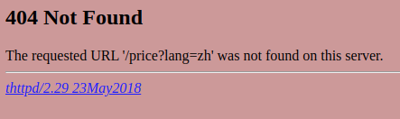

# Trouble
Vue 開發網頁打包成靜態網頁檔案，使用 docker compose 結合 nginx 佈署，網頁切換到有路徑的頁面後按 F5 重新整理頁面會出現 404 錯誤 。
靜態頁面打包後有再用 thttpd 作為 web 服務並打包成 container 方便佈署，實際錯誤情況如下圖，如果不同的 web 服務會有不同畫面。

# Docker-compose.yml
有修改過的內容，實際不只有兩個 container
services: | |
nginx: | |
image: nginx | |
restart: unless-stopped | |
volumes: | |
# nginx 設定檔 | |
- ./nginx.conf:/etc/nginx/conf.d/default.conf | |
- ./robots.txt.test:/usr/share/nginx/html/robots.txt | |
environment: | |
TZ: Asia/Taipei | |
ports: | |
- target: 80 | |
published: 80 | |
protocol: tcp | |
mode: host | |
# 前端 web service | |
branded: | |
image: ***馬賽克*** | |
restart: unless-stopped |
# Nginx.conf
server { | |
listen 80; | |
server_name ""; | |
# LB Public IP address | |
set_real_ip_from ***馬賽克***; | |
set_real_ip_from 130.211.0.0/22; | |
set_real_ip_from 35.191.0.0/16; | |
real_ip_header X-Forwarded-For; | |
real_ip_recursive on; | |
# 阻擋的 User Agent | |
if ($http_user_agent ~* ***不要告訴泥*** ) | |
{return 101;} | |
location /robots.txt { | |
alias /usr/share/nginx/html/robots.txt; | |
} | |
location /healthcheck { | |
access_log off; | |
return 200 'ok'; | |
} | |
# 前端 | |
location / { | |
proxy_pass http://branded/; | |
proxy_set_header Host $host; | |
proxy_set_header X-Real-IP $remote_addr; | |
proxy_set_header X-Forwarded-For $proxy_add_x_forwarded_for; | |
proxy_set_header X-Custom-Referrer smc_identity_layer; | |
} | |
} |
# Solution
在 nginx.conf 加上
proxy_intercept_errors on;
error_page 404 /index.html;
# 前端 | |
location / { | |
proxy_pass http://branded/; | |
proxy_set_header Host $host; | |
proxy_set_header X-Real-IP $remote_addr; | |
proxy_set_header X-Forwarded-For $proxy_add_x_forwarded_for; | |
proxy_set_header X-Custom-Referrer smc_identity_layer; | |
# 高情商 (?) 加下面這兩行 | |
proxy_intercept_errors on; | |
error_page 404 /index.html; | |
} |